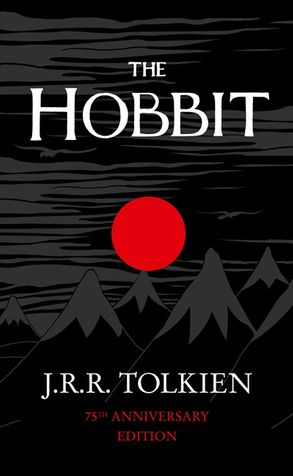

| Cover | Title | Author | Pages | Read? | Description |
|---|---|---|---|---|---|
|  | The Hobbit | J. R. R. Tolkien | 310 | Yes | The Hobbit is set within Tolkien's fictional universe and follows the quest of home-loving Bilbo Baggins, the titular hobbit, to win a share of the treasure guarded by Smaug the dragon. Bilbo's journey takes him from light-hearted, rural surroundings into more sinister territory. |